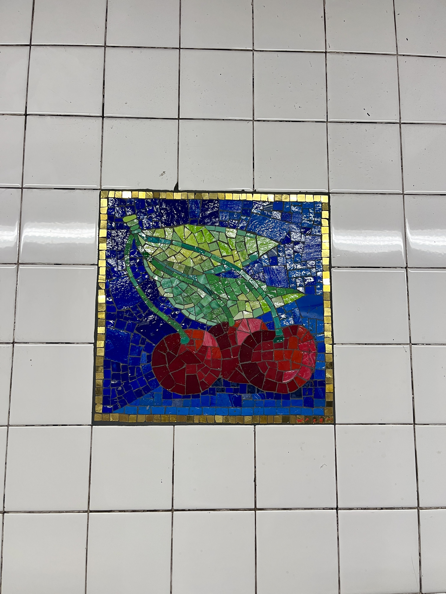
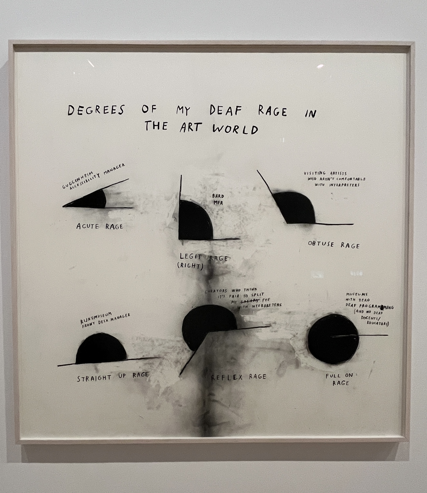
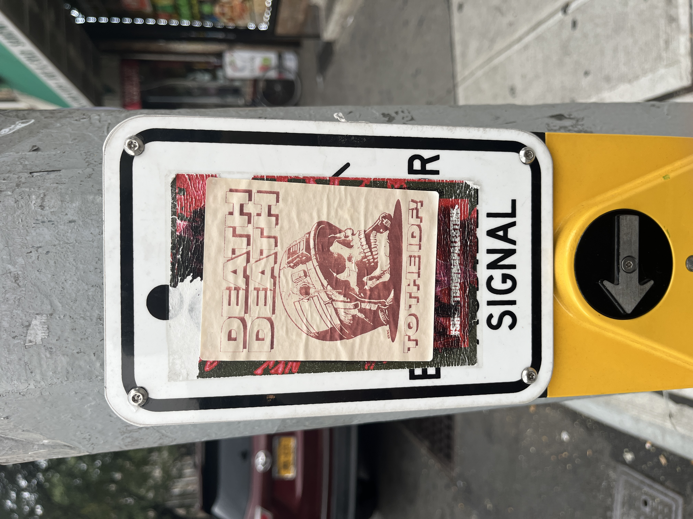
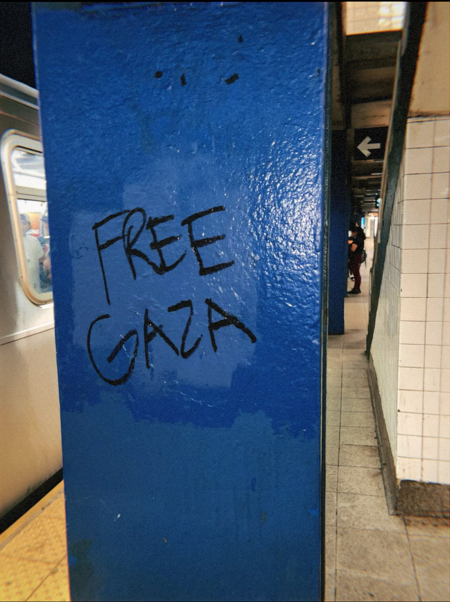
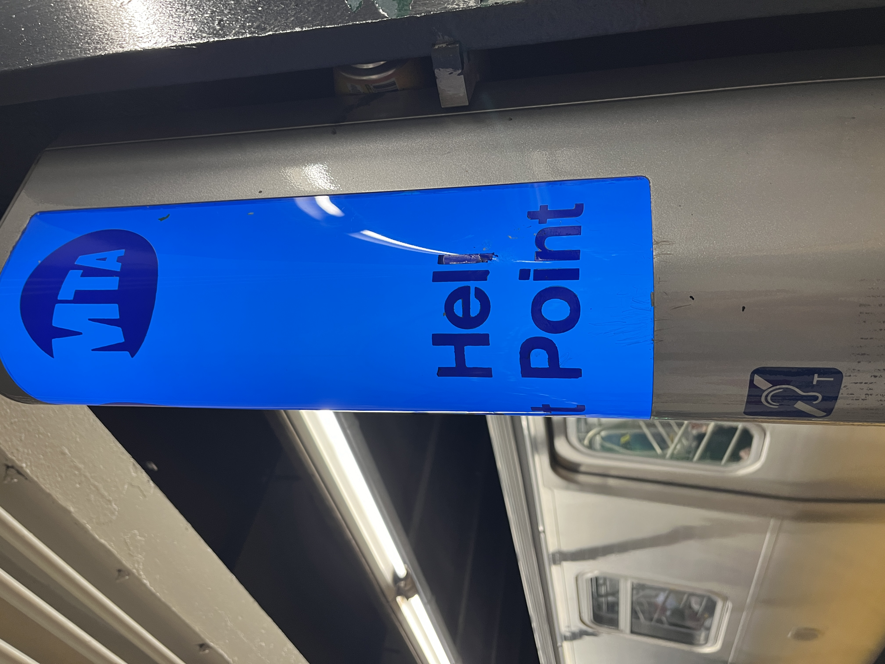
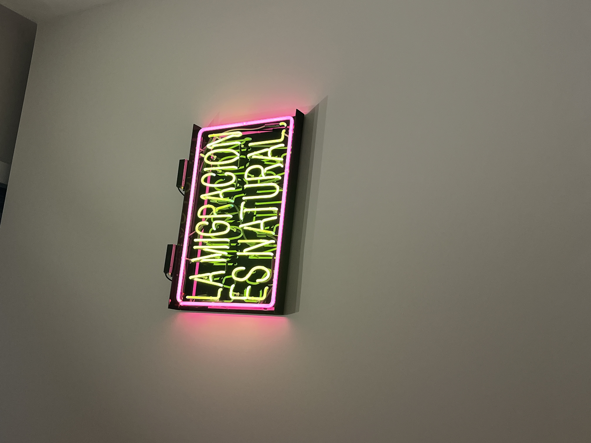

Graffiti & Other Art
This page shows all the street art and institutional art I have seen throughout the city.
The museum's I have visited in NYC so far are:
Museum's I have yet to visit:
Cherry mosaics at the Delancey stop
Christine Sun Kim's exhibit "All Day All Night" at the Whitney Museum
In love with this sticker
From the river to the sea
Someone rearranged the letters on the 'Help Point' at the subway stop
Artwork by Patrick Martinez at the Whitney museum